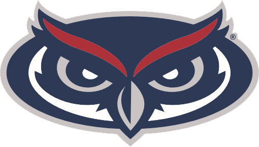

Screen the recording
Built a three-tier system for lighting, focus, subject visibility, and walking orientation.
NSF REU Research · June to July 2026
I developed a quality-control pipeline that checks walking recordings before pose estimation and gait-metric computation. The system catches recording problems early, while a useful retake is still possible.

Official FAU Project · I-SENSE NSF REUResearch led by Dr. Behnaz Ghoraani ↗What I built
Built a three-tier system for lighting, focus, subject visibility, and walking orientation.
Combined YOLOv8 person tracking with MediaPipe pose estimation across frames.
Developed the pipeline to support body-joint extraction and gait-metric computation.
Integrated a local LLM for technical summaries and plain-language clinical guidance.
Synthetic demonstration